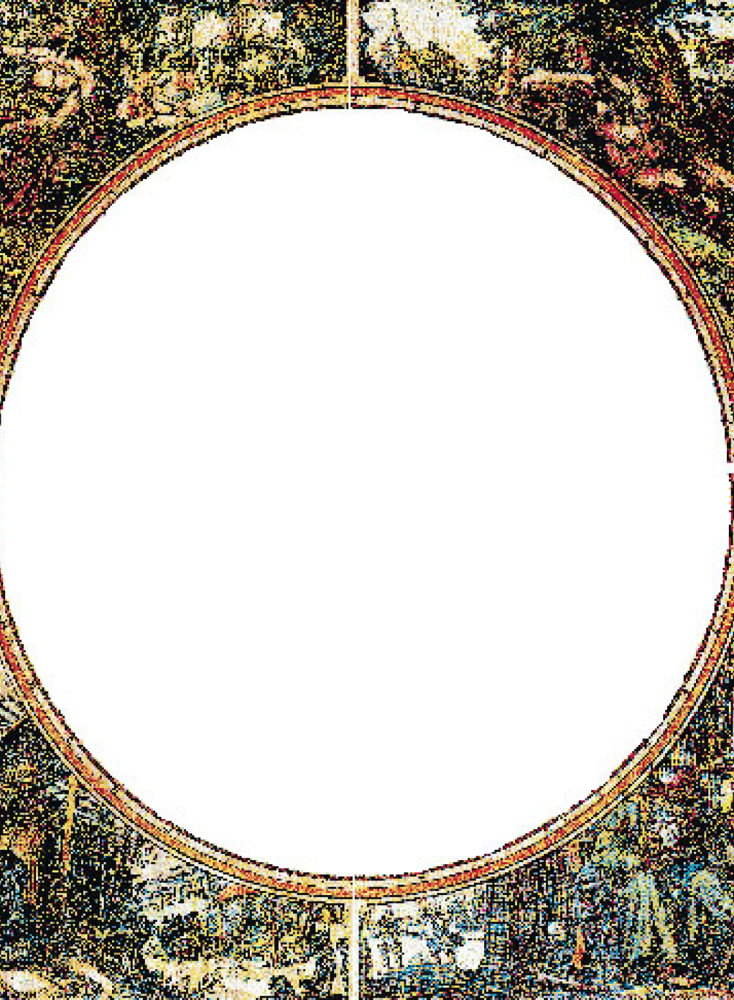
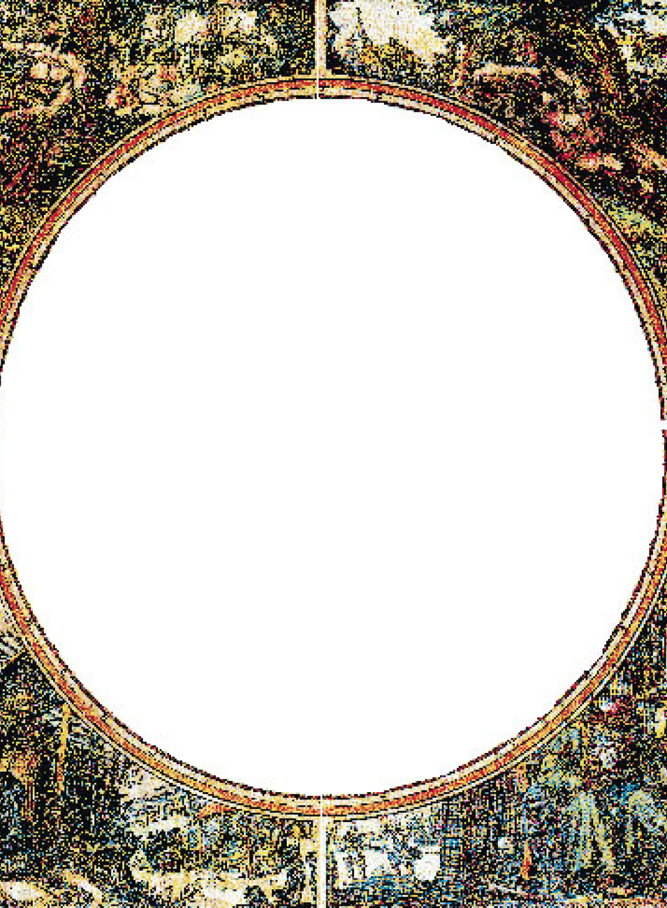

Большая карта Мира
"Большая карта мира" (Magna Carta Mundi) составлена Николасом Иоаннисом Фишером и издана в Амстердаме в 1683 г. Николас Иоаннис, будучи прекрасным гравером и художником, основал в Амстердаме издательский дом граверов и картографов. Издательство было названо "Дом Пискаторов", что являлось переводом на латынь фамилии Фишер (Visscher - рыбак).
114x84
Багет
19900 руб.

 
